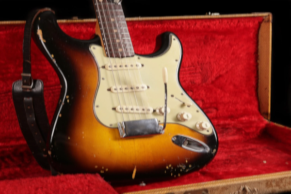
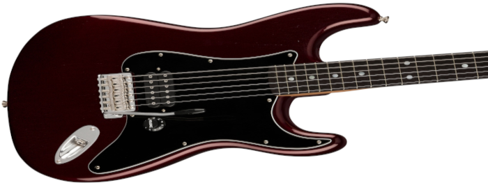

<!DOCTYPE html>
<html lang="pt-br"></html>
<head>
    <meta charset="UTF-8">
    <meta http-equiv="X-UA-Compatible" content="IE=edge">
    <meta name="viewport" content="width=device-width, initial-scale=1.0">
    <title>Meu Site</title>
    <link rel="shortcut icon" href="Imagens/favicon.ico" type="image/x-icon">
    <link rel="stylesheet" href="style.css">
</head>
<body>

  <header>
    <h1>Historia dos Instrumentos Fender</h1>
    <p>Todo musico sonha um dia tocar, em um Fender 🎸 </p>
  </header>
  <nav>
     <a href="#">Home</a>
     <a href="#">Instrumentos</a>
     <a href="#">Marcas Parceiras</a>
     <a href="#">Fale Conosco</a>
  </nav>
  <main>
    <article>
        <h1>Historia dos Fenders</h1>
        
        <p> A <a href="https://www.fender.com/en/start" target="_blank" class="externo">Fender</a> é a maior fabricante de <strong>guitarras</strong>, <strong>baixos</strong> e equipamentos relacionados do mundo.
        Com uma brilhante história datando de 1946, a <strong>Fender</strong> tem tocado e transformado a música por todo o mundo e em quase todos os gêneros musicais: rock 'n' roll, country, jazz, blues e muitos outros. Todos, de inciantes e hobbistas aos mais aclamados artistas, têm usado instrumentos e amplificadores Fender. Instrumentos Fender, como as <strong>guitarras Stratocaster e Telecaster</strong> e os <strong>baixos Precision e Jazz Bass</strong>já viraram uma lenda no mundo da música..</p>

        <h2>Modelos dos Primeiros Instrumentos</h2>
        
    <picture>
        <source media="(max-width: 670px)" srcset="Imagens/Guitarra-Fender 1960 pq.png">
    </picture>

        <h2>Historia de Leo Fender</h2>

        <p>Nos anos 40, o inventor do sul da Califórnia <a href="https://pt.wikipedia.org/wiki/Leo_Fender" target="_blank" class="externo">Leo Fender</a> percebeu que poderia melhorar os instrumentos de corpo oco usando um inovador, e relativamente simples, design de corpo sólido de guitarra elétrica.</p> 
        
        

        <p>Posteriormente, percebeu que podia construí-los em linha de produção. Em 1951, apresentou o protótipo de um instrumento de corpo sólido, posteriormente chamada de <strong>guitarra Telecaster.</strong> A Tele, como ela era e continua sendo conhecida, foi a primeira guitarra estilo espanhol de corpo sólido a ser produzida em massa para comercialização. Nesse periodo tambem construiu o primeiro prototipo de contra-baixo.</p>

    <picture>
       <source media="(max-width: 670px)" srcset="Imagens/Guitarra-Fender 2023 pq.png">
    </picture> 
        
        <p>Naquele mesmo ano, Fender apresentou sua revolucionária nova invenção - o baixo Precision Bass. Ele era tocado como uma guitarra e tinha trastes, por isso podia ser tocado "com precisão" (daí o nome Precision) e podia ser amplificado, libertando os baixistas dos desconfortáveis e extremamente "difíceis de se ouvir" baixos acústicos.</p> 

        <p>Esses dois instrumentos históricos   sacramentaram a fundação de um novo tipo de grupo e uma revolução na música popular - o que nós conhecemos hoje como "rock combo". Ao oposto das <strong>"big bands"</strong> da época, os instrumentos elétricos Fender tornaram possível aos pequenos grupos se conhecerem e serem ouvidos.</p> 

        <p>A Fender se tornou líder mundial por definir o som de guitarra que conhecemos, por atender às necessidades dos músicos, por criar produtos de qualidade e por assegurar manutenção e estabilidade a todos os seus produtos, e tambem por manter seu design, marca registrada da empresa.</p>
        <p>Conforme a <strong>FMIC</strong> adentra o século 21, sua gerência manterá o status de número 1 da Fender através de uma combinação vencedora de empenho comercial e amor pela música como podemos ver no video a seguir.</p>  
        
    <div class="video">
        <iframe width="560" height="315" src="https://www.youtube.com/embed/DlMJ5ji5Ris" title="YouTube video player" frameborder="0" allow="accelerometer; autoplay; clipboard-write; encrypted-media; gyroscope; picture-in-picture; web-share" allowfullscreen></iframe>   
    </div> 
        
    <aside>
        <h3>Quer aprender mais?</h3>

        <p>Desde sua fundação, a <a href="https://www.fender.com.br/" target="_blank" class="externo">Fabrica da Fender</a>  FMIC tem crescido muito em vendas e status. Ela fabrica e distribui tudo o que guitarristas e baixistas precisam, de instrumentos, amplificadores, cordas e acessórios a produtos de áudio profissional, como mesas de mixagem e sistemas de PA.</p> 
        
        <ul>
            <li>
                <abbr title="Baixo de Precisao">Bass Fender Precision</abbr>
            </li> 

            <li>
                <abbr title="Baixo de Jazz Baixo">Bass Fender Jazz Bass</abbr>
            </li>

            <li>
                <abbr title="Baixo do Mustagn">Bass Fender Mustang</abbr>
            </li>

            <li>
                <abbr title="Baixo Jaguar">Bass Fender Jaguar</abbr>
            </li> 

            <li>
                <abbr title="Guitarra Estrato">Guitar Fender Stractocaster</abbr>
            </li>

            <li>
                <abbr title="Guitarra Telecaster">Guitar Fender Telecaster</abbr>
            </li>

            <li>
                <abbr title="Guitarra Jaguar">Guitar Fender Jaguar</abbr>
            </li>

            <li>
                <abbr title="Guitarra Mustangue">Guitar Fender Mustang</abbr>
            </li> 
        </ul>
   
        <p>O centro operacional da fender está localizado em <strong>Scottsdale, Arizona, EUA</strong>  e a gerencia de fabricação fica na <strong>Fender Custom Shop em Corona, Califórnia, EUA.</strong>  Os nomes<strong> Fender, Charvel, Gretsch, Guild, Jackson, Squier e SWR</strong> são nomes da FMIC.</p> 

        <p>Acesse aqui o site <a href="https://www.fender.com.br/" target="_blank" class="externo">Fender Brasil</a> para conhecer a fabrica e os instrumentos que sao lancados no Brasil.</p>  
    </aside>
    <p>Entao e isso! Espero que voce tenha gostado do nosso artigo com essa curiosidade sobre os instrumentos Fenders e sua fabrica.</p>
  </article>
  </main>
  <footer>
    <p>Site criado por <a href="https://github.com/GabrielMalmin" target="_blank">Gabriel Oliveira</a> para o projeto do <a href="https://www.youtube.com/@CursoemVideo" target="_blank">CursoemVideo</a>.</p>
  </footer>
    
</body>
</html>